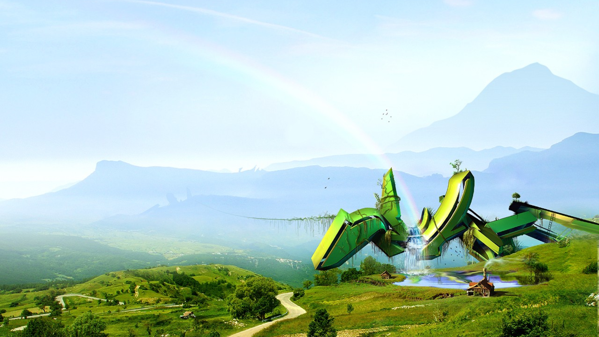
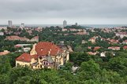
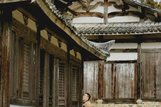
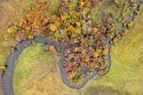
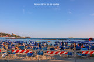
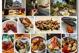

版面列表
发新帖
艾伦伦Aluce
在向日葵盛开的地方，哼一首巴尔干民谣（9日塞尔维亚自驾之旅/挑战跳伞/30张旅行手绘）
houzhiyun
雨季西藏，隐没在云翳后的绿意盎然——2021.7-8跨九省自驾入藏纪行（全文完）
简单就是快乐
【记录2021】江南之秋，杭州、莫干山枫叶季小度假，大收获！（62号别墅、西湖、九溪烟树、植物园、南北湖、绮园）
谢旭
生命如花，在寂静的岁月中绽放---西沙/婺源/贵州/浙江/云南/凤凰/盘锦/35篇随笔思考人生理想（山人游记29）





